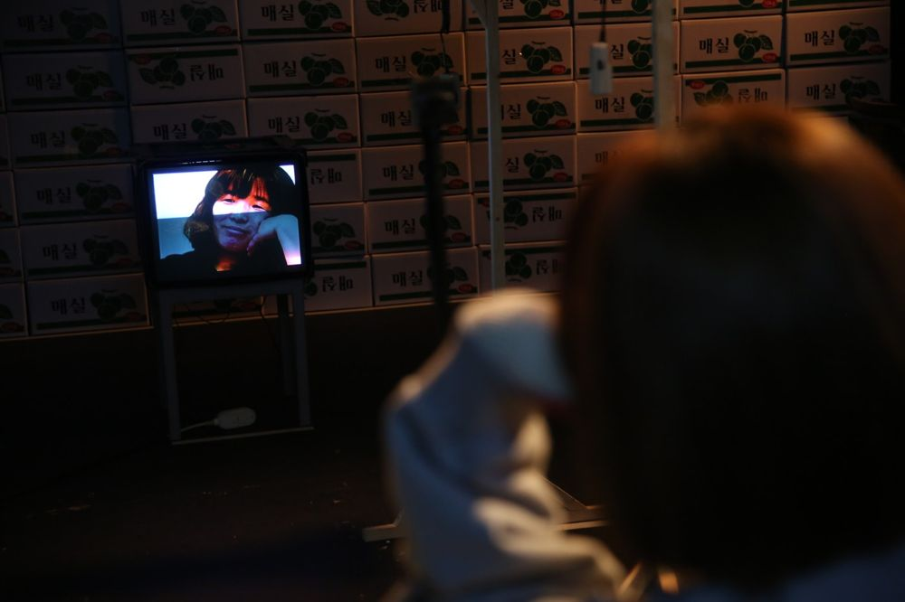

Green Pig > Archive > Labor Landscape 1: Unemployment

Redefines contemporary labor through the keyword "unemployment." It asks questions aimed at reclaiming labor not as a commodity but as a right to become a human being and a citizen.
2020.1.17–2.2 / Yeonwoo Theater - Yeonwoo Mudae Propaganda Series
2020.8.14–21 / Jeon Tae-il Memorial Hall, Ullimteo
Devised by: Green Pig
Director: Yoon Hansol
Dramaturg: Jeon Sunghyun
Assistant director: Jung Yujin
Cast (2020): Kim Wontae, Park Giwon, Lee Minjeong, Cho Eunwon
2020.2.10 Criticism, Kim Okran (Naver blog)
Previous: Delivery Return | Next: Contemporaries
Back to the archive | Any work
Published 2026.11.13